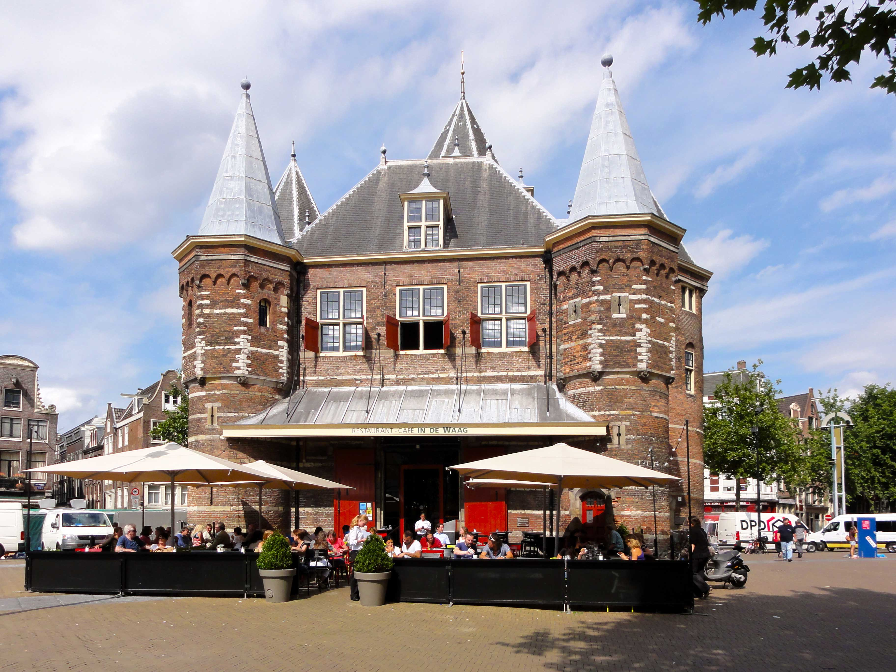

Maptime Boston
Vector Tile workshop
By Niene Boeijen
Niene Boeijen


Web Cartographer & Geo ICT developer
Maptime Amsterdam & Utrecht
Internship Geo Web Visualization
Msc Geo Information Science & Remote Sensing
What the map can be
We make interactive maps and visualizations.
Our expertise is open {source; data; standards}
Our power lies in combining cartography with web technology.
Utrecht, The Netherlands
Maptime
Time for making maps!
Maptime is hands on!


WIFI:
PW:
This presentation
bit.ly/2sA4mly
All materials needed:
https://github.com/maptime-ams/vector-tiles-workshopWhat will we do?
- Presentation.
- Workshop.
- Show and tell.
Goal of this evening!
At the end of this workshop, you will have your own web page with an vector-tile based map! Customized to your liking and creativity! Your web page will be hosted on Github, so you can immediately share your progress with all your family and friends!

Let's get started!
Vector tiles!
Let's start from the beginning
- What is a Web map?
- From Raster to Vector
- Vector tiles and what they look like
- Standards
- Downloading
- Making yourself
- Hosting
- Visualizing
What is a web map?
Analogue paper maps
| Digital maps | VS | Web Maps |
|---|---|---|
| Data | Tiles, styles and servers | |
| On the computer | View in a browser | |
| Calculate, analyze | scroll, pan, zoom |

openstreetmap.org
google.com/maps
a little History
Digital maps
GIS software
GIS on the Web is not user friendly..
1996 Mapquest first with a web service!

But really slow to load..
in 2004 Endoxon found a way for quick online mapping! map.search.ch
2005 Google Maps took over!
The solution?
Tiles!
Tiles
All tiles size 256x256 pixels
Placed in a grid, sharing boundaries
Seamless map
All these little tiles load way faster than one big map!
We call this slippy maps
Zoom levels
Each zoom level has its own set of tiles!
Zoom level 0: 1 tile for the whole world.
Increases exponentially...
Zoom level 1: 4 tiles
Zoom level 2: 16 tiles
etc.
 Map with tile bounds
Map with tile bounds
Serving tiles
Tiles are rendered in advance.
Stored in a cache.
Tiles are just images on the web with a url
http://tile.openstreetmap.org/5/16/10.png http://tile.openstreetmap.org/17/67320/43073.png{kind=link}
{kind=link}
{z/x/y}

Raster Web Map Building blocks
Data, styled, tiles, server:
Base Layer
Additional Data:
Layers
Interface and Interaction
Zoom, panning, clicking etc.

Maps with JavaScript

Making a Web Page


New to HTML & CSS?
Start with Making a web page
Or use Code Academy

From Raster to Vector
Advantages Vector tiles
Rendering is done on client side not by the server!
So different clients can style a map different!
Small tile size! So faster data transfer.
High resolution!
Access to feature information!
Who What Where?
Vector tiles and what they look like.
No colours
Arrays in a 256 x 256 matrix
Same tiling schema as Raster png tiles.
Binary format
Simplifies geometries
Standards
Mapbox Vector Tile Standard.Based on the binary protocal buffer (.pbf) from Google.
Standard already used by Esri.
Web Mercator projection, Google tiling scheme.
Formats
.mvt - .pbf
.mbtiles
Where to get them?
Download
Make with Mapbox Studio
Hosted
Mapzen
https://tile.mapzen.com/mapzen/vector/v1/{layers}/{z}/{x}/{y}.{format}Licences..
Bake them your self
Host yourself?
Use locally offline
Tile servers
The Netherlands!
NL Amsterdam Datalab.
"https://t1.data.amsterdam.nl/wm/{z}/{x}/{y}.pbf"How to visualize them?
Mapbox studio
JavaScript
Cool stuff!
More info?
Feel free to contact me!
niene.boeijen@gmail.com
Let's get started!

What is in the workshop?
a full code example of how to make a map with the Mapbox GL js library
a endpoint where to find your tiles
a standard style for you to edit
How to make your own vector tiles
How to donwload OSM vector tiles
Full code example on Github!
//Initialize Map
var map = new mapboxgl.Map({
container: "map",
hash: true,
style: style_object,
zoom: 11,
pitch: 60,
bearing: 62.4,
center: [ 4.8, 52.4]
}); The workshop:
https://github.com/maptime-ams/vector-tiles-workshop/wikiThe materials needed:
https://github.com/maptime-ams/vector-tiles-workshop